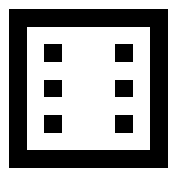

------
The web app for practicing mental arithmetic by tapping.
You can see the time it took for the 20 questions.
kuku?t10 (Tashite 10) is addition / subtraction up to 10.
kuku?t20 (Tashite 20) is addition / subtraction up to 20.
kuku?x9 (Kuku) is multiplication up to 9x9.
kuku?x19 (Indian Kuku) is multiplication from 11x1 to 19x19.
"Add to Homescreen" to use like as native app.